Making a Powerhammer
Here are some pictures from a workshop on making a powerhammer. The photos are courtesy of Dennis Liffick, whom you see welding in several of the pictures.
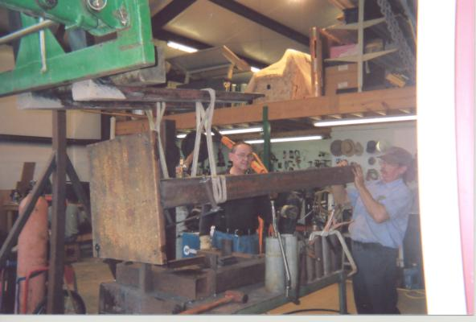 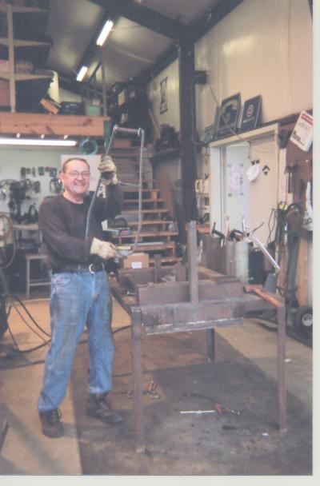 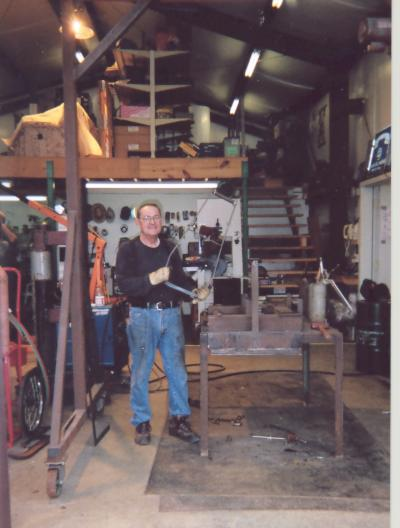 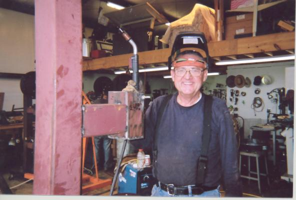 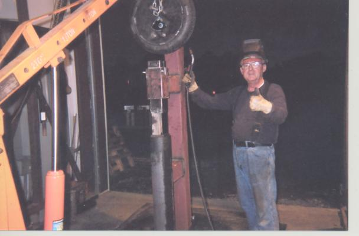
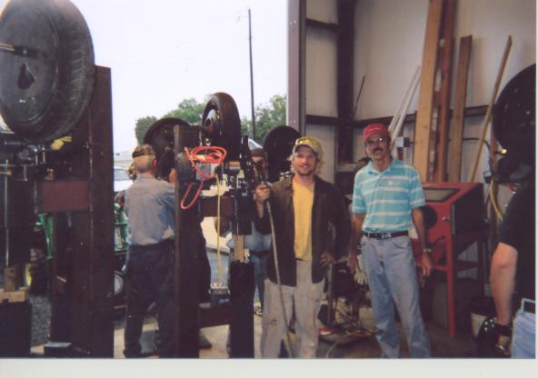 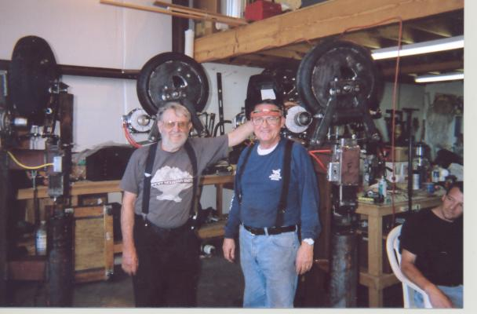 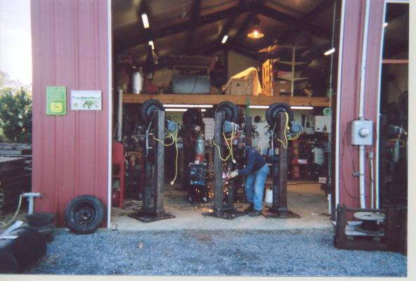 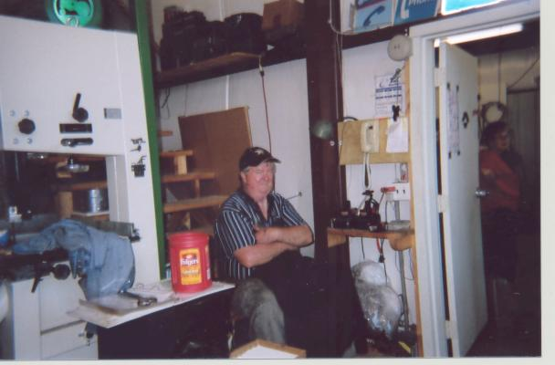 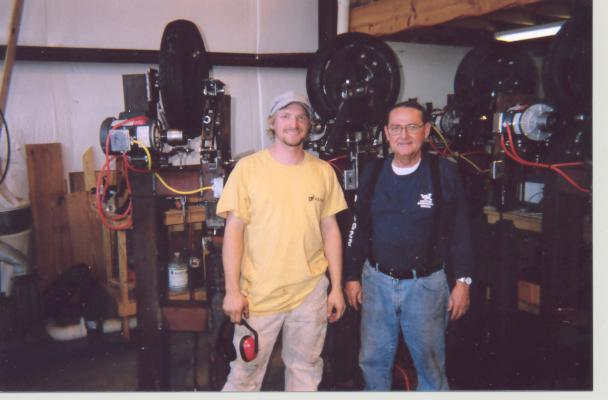 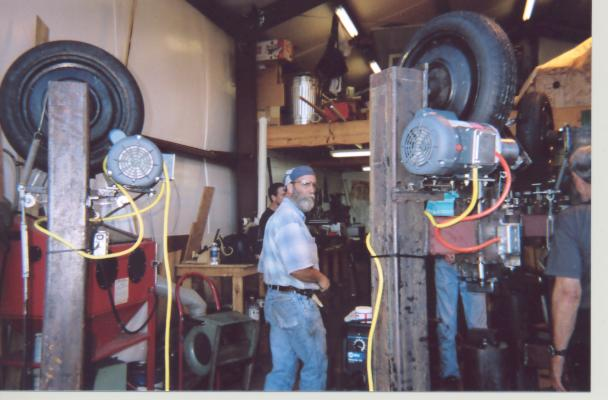 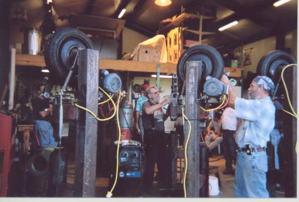 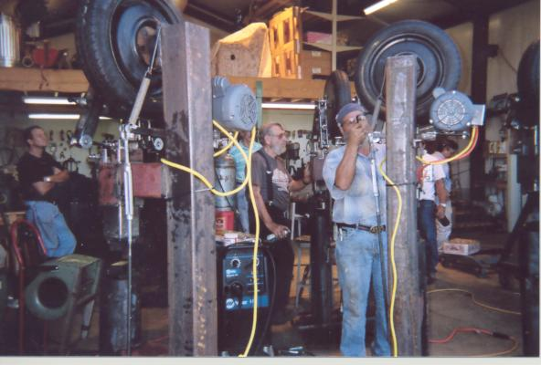 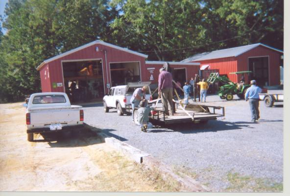 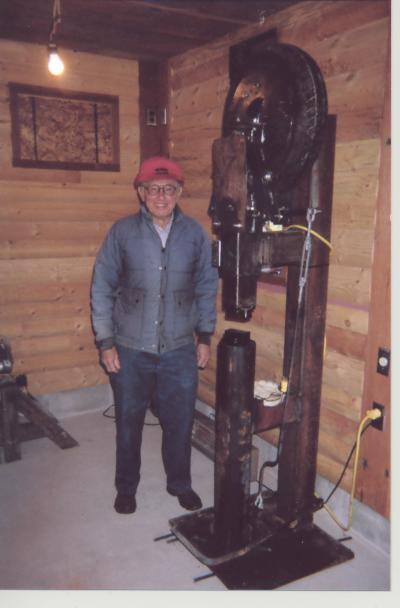
 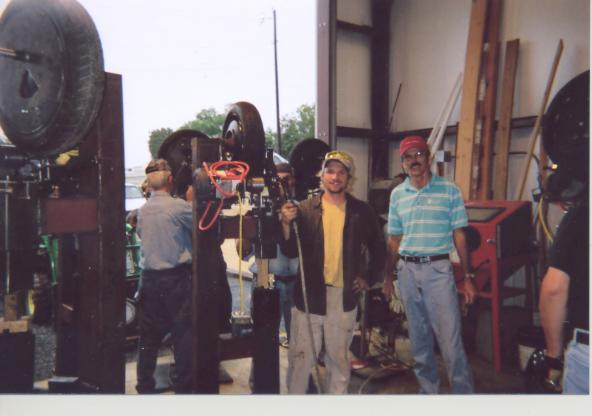
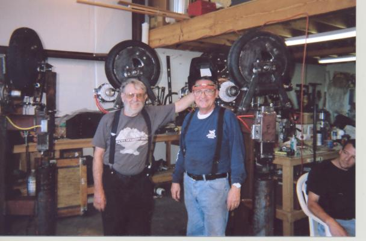
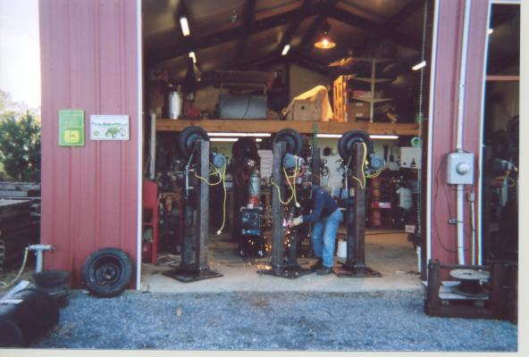
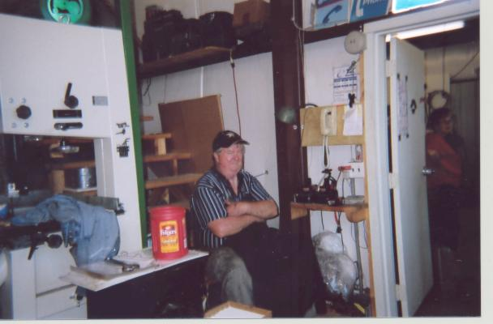
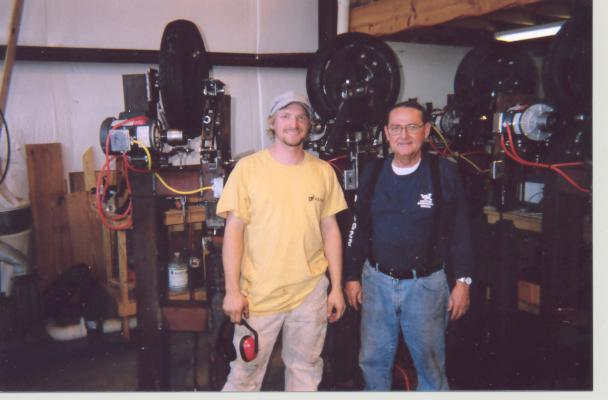
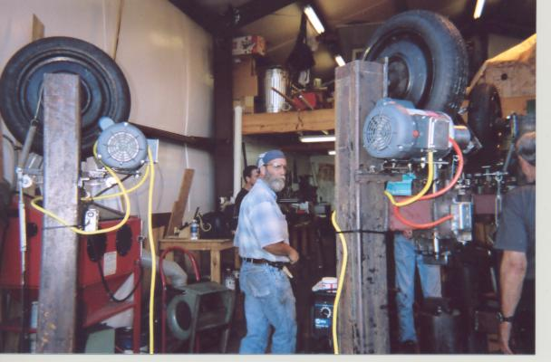
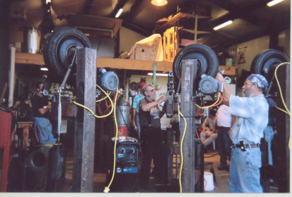
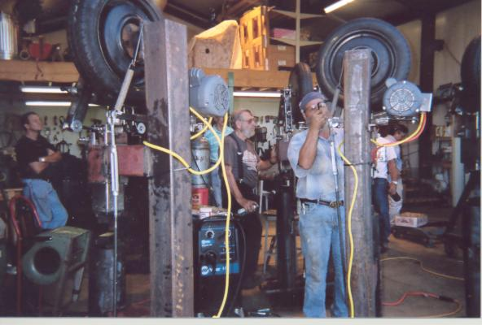
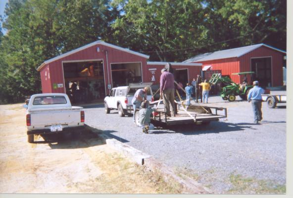
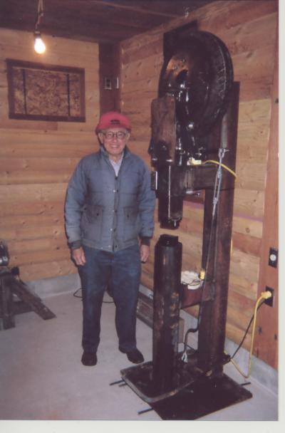
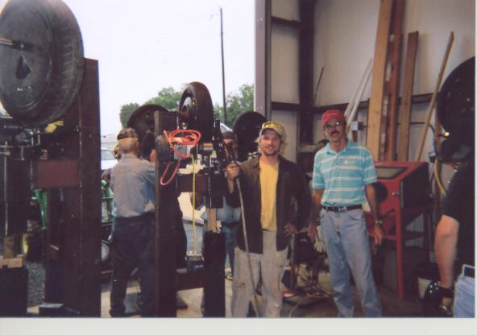
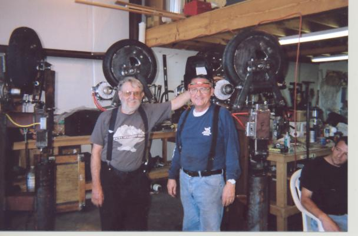
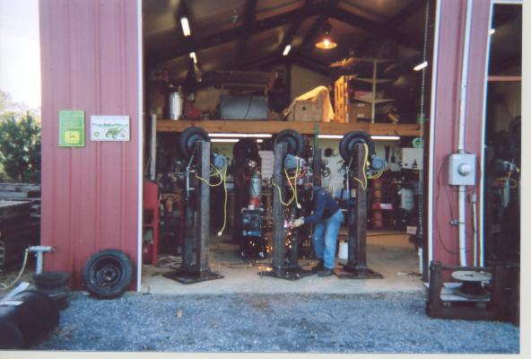
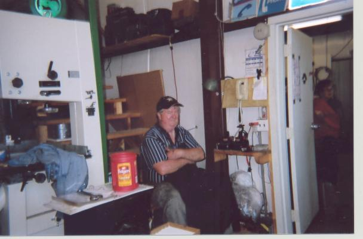
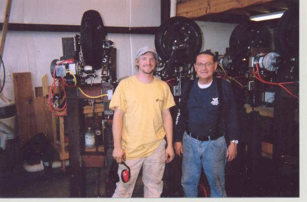
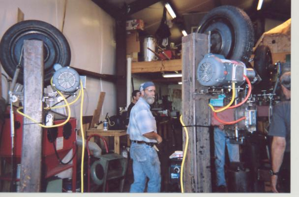
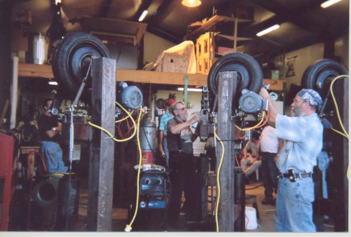
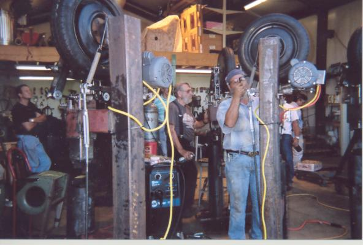
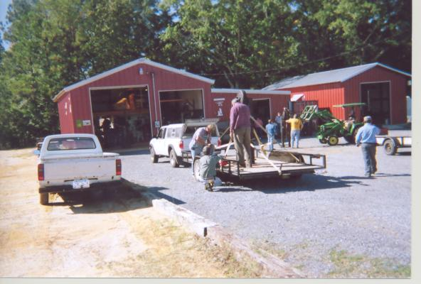
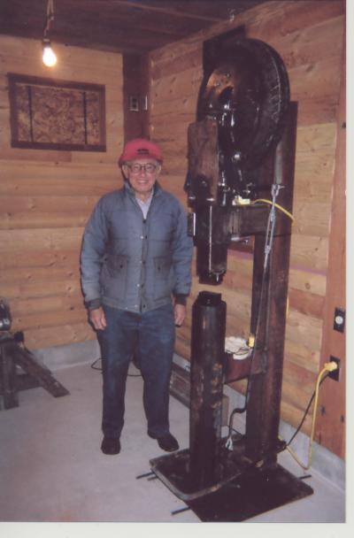